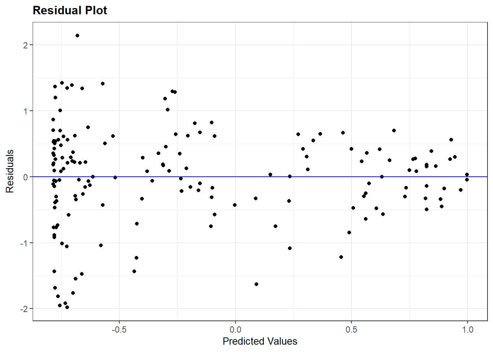
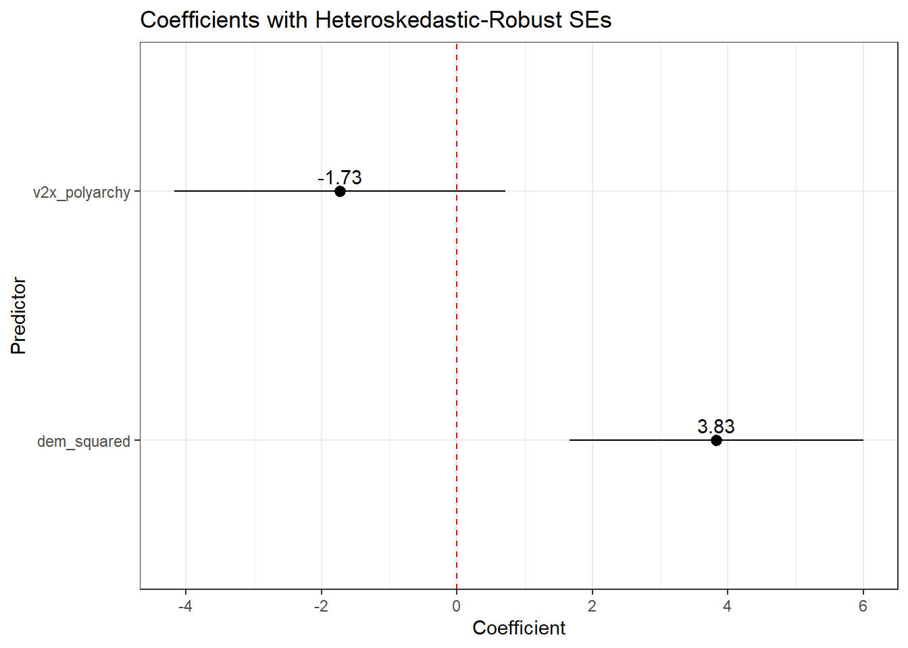
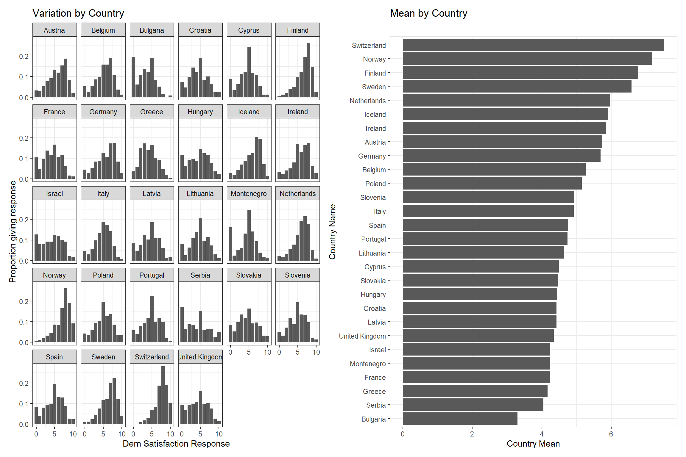
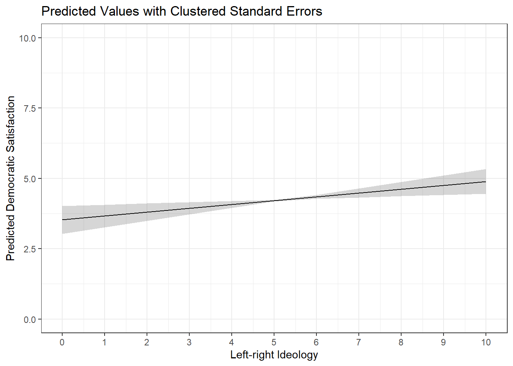

Appendix D — Addressing Failed Error Assumptions in OLS Models
#Packageslibrary(ggResidpanel)library(rio)library(tidyverse)library(modelsummary)library(marginaleffects)library(broom)# Datasets used in examples belowdemdata <-import("demdata.rds")ess_demsatis <-import("ess_demsatis.dta")normal_residual_data <-import("normal_residual_data.rda")serial_data <-import("serial_autocorrelation.rda")
1
Assumptions checks through plots
2
Data importing
3
Data manipulation/plotting
4
Regression tables
5
Predicted values & marginal effects
6
Model summaries
Who is this for?
You do not need to know how to perform these analyses for the assignments in Statistics II. Instead, this guide is for students writing their final paper in Data Skills or a BAP thesis project.
Regression models are built on top of simplifying assumptions. An important part of analyzing data involves questioning whether those assumptions are being reasonably met in one’s analyses and, if not, trying to address the issue in an appropriate manner. Statistics II focuses more on the first part of this process and particularly so when it concerns assumptions related to the prediction errors or residuals of a statistical model. This Appendix provides a brief overview of some potential remedies for issues on this front.
The \(e_{i}\) term in the equation above represents the prediction errors, or residuals, in an linear regression (OLS) model. There are three key assumptions regarding the \(e_{i}\) term in an OLS model:1
The residuals have a constant variance across the range of the model’s predictions (homoskedasticity)
The residuals are independent of one another
The residuals are normally distributed around a mean of 0
Violations of these assumptions have important consequences for our tests of statistical significance. In particular, serious violations of these assumptions leads to unreliable estimates of a coefficient’s standard error and, as a result, inaccurate statistical significance tests.
D.2 Addressing Heteroskedasticity
D.2.1 What’s the problem again?
The following example focuses on a statistical model introduced in Chapter 7 wherein we predict the extent of political violence in a country based on the country’s level of democracy. We also include a squared term for democracy in the model to account for a theorized non-linearity in the relationship between the two variables. Here is the model and its coefficients:
# Creating a squared termdemdata <- demdata |>mutate(dem_squared = v2x_polyarchy * v2x_polyarchy)# Our modelviolence_model <-lm(pve ~ v2x_polyarchy + dem_squared, data = demdata)# Model coefficientstidy(violence_model, conf.int =TRUE)
We can examine the assumption of homoskedasticity via the resid_panel() command as discussed in Chapter 7:
# Checking the assumptionresid_panel(violence_model, plots =c("resid"))

We assume that the residuals are homoskedastic or constant in their variance when moving across the x-axis in the figure above. A violation of this assumption would manifest in a funnel-type shape in the figure, which is just what we see here. The distribution of the residuals is very wide toward the left-side of the plot and grow more narrow as we move to the right.
D.2.2 Potential solution: heteroskedastic-robust standard errors
Note
The vcov option used below, and in the other sub-sections below, relies on a library called sandwich to help calculate the standard errors. You may need to install this library before applying this “solution” in your own examples.
Heteroskedasticity may emerge for a number of different reasons. For instance, heteroskedasticity may emerge due to the presence of omitted variables and, hence, addressed by including additional predictors. Of course, we may not know which predictors will help address our problem. Another possibility is that heteroskedasticity may emerge due to an incorrect model specification, e.g., modeling a non-linear relationship as linear. That is not an issue here though. What else can we do?
One potential tool we can use in this situation is to change how the standard errors are being calculated. The “classic” standard errors that R reports for us are based on the assumption of constant variance, but we can instead use “heteroskedatic-robust” standard errors that do not make this assumption. Using these types of standard errors does not magically fix our model. If the problem above is being generated by an omitted confounder variable, for instance, then changing the standard errors does not help with that. However, we can nevertheless use these types of standard errors to see if our (statistically significant) results are “robust” to alternative model specifications.
The simplest way to obtain these standard errors is when creating our regression table via the modelsummary package. Here is how we would normally create the regression table:
The vcov = option changes the calculation of the standard errors from their “classic” form to something else. “HC3” specifies that we want heteroskedastic-robust standard errors. There are various types of heteroskedastic-robust standard errors (e.g., “HC0”, “HC1”, etc.). We recommend “HC3” as a good default and particularly so because it performs well with smaller samples.
Let us compare results using the “classic” standard errors and these “robust” ones:
The first column in the table above show the result using “classical” SEs while the second shows the robust estimates. We can note a few things here:
The coefficients have not changed. Altering the way the SE is calculated will not effect the coefficient estimate.
The HC3 SEs are slightly larger. This is typically what happens since heteroskedasticity tends to introduce a downward bias on the standard errors (i.e., makes them smaller than they should be).
Our overall conclusions are unchanged - while the SEs increase in value, the increase is pretty small and does not affect any of the statistical significance tests we care about (i.e., the slope coefficients). This may not happen in all use cases though.
The example above focuses on the use of modelsummary() to provide a summary of results via a regression table. We can also use this syntax when creating predicted values and coefficient plots so that the confidence intervals displayed in those figures are based on the robust standard errors rather than the classic ones. We can use the same syntax as above when asking for predicted values via the predictions() command in the marginaleffects library (e.g., predictions(model, ..., vcov = "HC3")). However, we cannot neatly integrate this syntax into the tidy() command that we normally use when creating a coefficient plot (see Chapter 8). Instead, we can turn to the avg_slopes() command from the marginaleffects package. avg_slopes() will return estimates of the marginal effects of each IV in a model; in the case of an OLS model, these are simply the coefficients from the model. For instance:
As above, we can add the vcov = option to this avg_slopes() command and then plot those results. For instance:
# Use with robust SEs and coefficient plotavg_slopes(violence_model, vcov ="HC3") |>ggplot(aes(x = estimate, y = term)) +geom_pointrange(aes(xmin = conf.low, xmax = conf.high)) +geom_text(aes(label =round(estimate, 2)), vjust =-0.5) +geom_vline(xintercept =0, linetype ='dashed', color ='red') +theme_bw() +labs(x ="Coefficient", y ="Predictor", title ="Coefficients with Heteroskedastic-Robust SEs")
1
Asks for the marginal effects of the IVs in the model along with heteroskedastic robust SEs.

D.3 Addressing Independent Error Violations
A second crucial assumption in OLS (and logistic) models is that of independence. We assume that the residuals in the population model (and the model we’re fitting in our sample of data in an attempt to emulate this population-level model) are uncorrelated with one another. This assumption can be violated in different ways often involving data that has some type of ‘nested’ or ‘clustered’ structure that is not being accounted for in the model. The following sub-sections discuss two ways this assumption can be violated and some potential remedies.
D.3.1 Problem 1: Clustered/Nested Data
D.3.1.1 An Example of the Problem
A common way that this error may be violated occurs when we have some type of “clustered” or “nested” data source. For instance, we might be interested in understanding why people report different levels of satisfaction with the way that democracy works in their country. Perhaps we are interested in the question of whether democratic satisfaction is higher among people on the political right than on the left with a particular interest in European countries. We might turn to a data source such as the European Social Survey wherein individual survey respondents are sampled from within countries across Europe. Individual survey respondents are “nested” or “clustered” within countries.
Here are the results of a model that examines this question. The DV is a respondent’s level of democratic satisfaction, as measured on a scale ranging from 0 (“extremely dissatisfied”) to 10 (“extremely satisfied”). The IV is the respondent’s self-rated ideology as measured on a scale ranging from 0 (“left”) to 10 (“right”).
# Model demsatis_model <-lm(stfdem ~ lrscale, data = ess_demsatis)# Coefficientstidy(demsatis_model, conf.int =TRUE)
The coefficient for the ideology variable (lrscale) is positive. Our model tell us that we should expect democratic satisfaction to increase as we move from the political left to right in this sample. The coefficient is also statistically significant per the comically small p-value (7.97e-117). Let us consider the plot below before we get too excited about our findings, however.
Show the code
# Extra package for plottinglibrary(patchwork)# Distribution plotdistribution_plot <- ess_demsatis |>group_by(country_name, stfdem) |>tally() |>ungroup() |>group_by(country_name) |>mutate(prop = n /sum(n)) |>ggplot(aes(x = stfdem, y = prop)) +geom_col() +facet_wrap(~ country_name) +theme_bw() +labs(title ="Variation by Country", y ="Proportion giving response", x ="Dem Satisfaction Response") +scale_x_continuous(breaks =c(0,5,10))# Plot of meansmean_plot <- ess_demsatis |>group_by(country_name) |>summarize(dem_satis =mean(stfdem, na.rm = T)) |>ggplot(aes(x = dem_satis, y =reorder(country_name, dem_satis))) +geom_col() +theme_bw() +labs(title ="Mean by Country", y ="Country Name", x ="Country Mean")# Combine together using patchworkdistribution_plot + mean_plot
1
The patchwork library is used to combine multiple plots together into one.
2
The following few lines get the number of responses per response value per country
3
We then calculate the proportion of cases in a country with a specific response via the next few lines.
4
The reorder() option is used to, well, reorder the y-axis such that the plot moves from higher levels to lower levels of the country mean data.

The figure above plots our data in two ways. The left hand plot shows the proportion of responses per response category (x-axis) by country (the separate facets). This plot shows that there is variation between individuals in all countries, e.g., there are people who are very satisfied with the way democracy works in their country and others who are not. However, we can also see that the shape of this distribution is not the same across countries. Some countries have more people toward the high end of the scale (e.g., Finland, Norway, and Switzerland) while other countries have more people toward the bottom end of the scale (e.g., Bulgaria, Serbia, and Greece). There is not just variation between individuals, but also between countries. This point is further communicated by the right-hand plot which shows the average value of the democratic satisfaction score by country. Democratic satisfaction is highest in Switzerland and lowest in Bulgaria within the other countries varying between these two poles.2
Democratic satisfaction is, on average, higher in some countries than others. There are various reasons why the average level of democratic satisfaction might vary between countries: the presence of different types of political institutions, variation in the the current performance of the governing coalition (e.g., scandals, etc.), varying economic conditions, and so on. Note that these factors are ones that are shared by people within a given country while varying between countries. As such, we might expect the prediction errors for people within a given country to be correlated with one another given exposure to these common country-specific influences thereby leading to a violation of our independent errors assumption. As a consequence, the standard errors in the model reported above are likely not correct and we should be cautious about making too strong a claim about ideology and democratic satisfaction based on this model.3
There are two common methods for addressing the foregoing issue.4 First, we can use “clustered standard errors” and “fixed effects”. In essence, we will change how the standard errors are calculated such that they will now take into account the within-cluster correlation between observations (the clustered standard errors part) while including a series of dummy variables for cluster membership (e.g., the country the survey respondent is sampled from) to control for sources of variation in the dependent variable that occurs at the cluster-level. Second, you will also see researchers use “multi-level models” to account for this type of problem. The main difference between these approaches is that a multi-level model enables one to simultaneously include predictors that aim to explain variation at both levels of the model (e.g., both individual level characteristics such as ideology and country-level characteristics such as economic inequality) as well as the potential interaction between these things (e.g., does the effect of ideology depend on the level of inequality in a country?). The next sub-section will focus on the former approach as the latter is beyond the scope of this book and appendix.
D.3.1.2 Clustered standard errors & fixed effects
Per above, one way to address the clustered data source is by including “fixed effects” for the cluster in our regression model and then clustering the standard errors from our model. The former goal is simply achieved by converting the cluster variable to a factor variable and then including that variable in the regression model.5
# Convert to a factoress_demsatis <- ess_demsatis |>mutate(country_name_F =factor(country_name))# Always check your work: Austria is the reference categorylevels(ess_demsatis$country_name_F)
We can see that our model now includes a coefficient for ideology (lrscale) as well as a series of dummy variables for country (country_name_FBelgium, country_name_FBulgaria, etc.). The former coefficient provides an estimate of the association between ideology and democratic satisfaction that emerges after adjusting for the country of the respondent (i.e., “controlling” for the respondent’s national origin). The latter coefficients provide the difference in democratic satisfaction we expect to observe between residents of each country and the omitted reference category (Austria in this example) after adjusting for ideology. For instance, if we compared a group of Bulgarian and Austrian individuals with the same ideology score, we’d expect democratic satisfaction to be around 2.42 scale points lower, on average, in the Bulgarian sample than the Austrian sample.
The foregoing results are still using “classic” standard errors. We can obtain “clustered standard errors” when creating a regression model via the modelsummary() command by including a vcov = option. Here is an example. We do not rename the variables here to keep the syntax simple.
This option changes the calculation of the standard errors from their “classic” form to something else. Using ~variable_name here tells modelsummary to cluster the standard errors by variable_name.
We can also incorporate clustering into the calculation of confidence intervals when plotting predicted values or marginal effects by including the same syntax in avg_slopes and predictions commands. For instance:
predictions(demsatis_model2, newdata =datagrid(lrscale =c(0:10)), vcov =~country_name) |>ggplot(aes(x = lrscale, y = estimate)) +geom_line() +geom_ribbon(aes(ymin = conf.low, ymax = conf.high), alpha =0.2) +theme_bw() +labs(title ="Predicted Values with Clustered Standard Errors", x ="Left-right Ideology", y ="Predicted Democratic Satisfaction") +scale_x_continuous(breaks =c(0:10)) +scale_y_continuous(limits =c(0,10))

Presentation
We used the modelsummary() function above to create a regression table with the coefficients for all of the country_F dummy variables. You may have noticed how long and ugly this table ended up looking. In practice, if there are many dummy variables and those dummy variables are not relevant for interpretation (e.g,. they are simply included as a control variable), then they may be omitted from the regression table being presented in the main text of a paper. However, you should clarify in a note to the reader that fixed effects and clustered standard errors have been used. It is also common to provide a table with the full results in an appendix for curious readers.
We can use the coef_map function in modelsummary() to omit coefficients from the output (see Section 15.2). For instance:
modelsummary( demsatis_model2, stars = T, vcov =~country_name_F, coef_map =c("(Intercept)"="Intercept", "lrscale"="Left-Right Ideology"), gof_map =c("nobs", "r.squared", "adj.r.squared"), title ="Democratic Satisfaction & Left-Right Ideology", notes ="Linear regression coefficients with clustered standard errors in parentheses. Model estimated with country fixed effects.")
Democratic Satisfaction & Left-Right Ideology
(1)
+ p < 0.1, * p < 0.05, ** p < 0.01, *** p < 0.001
Linear regression coefficients with clustered standard errors in parentheses. Model estimated with country fixed effects.
Intercept
5.146***
(0.230)
Left-Right Ideology
0.136**
(0.048)
Num.Obs.
39522
R2
0.160
R2 Adj.
0.160
D.3.2 Problem 2: Time Series Data and Serial Autocorrelation
An additional way that the assumption of independent errors may be violated is via the use of time-series data wherein repeated measurements are obtained for the same unit of analysis (e.g., a country, a person, a firm, etc.). For instance, we might be interested in examining the relationship between a country’s wealth and its level of democracy. We will use data from the V-Dem project and focus on the relationship between country wealth (e_gdp) and level of democracy (v2x_polyarchy). Our initial focus here will be on the Netherlands in particular. Here is a quick look at our data:
#Filtering the dataset to just the Netherlands for this examplenetherlands <- serial_data |>filter(country_name =="Netherlands")#Show the first 15 rows in the datahead(netherlands, n =15L)
Our dataset includes estimates of the level of wealth, and level of democracy, in the Netherlands from 1789 onwards. Is there a relationship between these two variables though? Does increasing wealth tend to go with increasing democracy? We can fit a linear regression to start answering this question (although we would want to include confounding variables in our model as well for a stronger test).6
The coefficient for e_gdp is positive in value. The coefficient value is very small but that should not necessarily be taken as indicating a small effect because the e_gdp variable has a very wide range. The coefficient, meanwhile, is statistically significant. However, the time series nature of our data makes it likely that our independent errors assumption is being seriously violated, which would have the consequence of depressing the size of the standard error for e_gdp. The specific problem here is known as serial autocorrelation. Serial autocorrelation means that the errors from the model are likely to be correlated across time, e.g., the error at time t is systematically related to the error a year prior or t-1. A country’s level of wealth and its level of democracy reflect, to some extent, fairly stable underlying characteristics of the country such as its institutions, natural resources, etc. There is likely a good deal of inertia to these variables such that our model’s prediction errors are likely to be somewhat consistent year to year.
We can formally check whether serial autocorrelation is problematic in our time series model via the Durbin-Watson statistic as shown in Chapter 7.
car::durbinWatsonTest(neth_model1)
1
The car:: prefix to the command enables us to use the command without loading the car package. This is advantageous since the car package also contains other functions that conflict with other packages in use, specifically the recode function from the dplyr/tidyverse.
lag Autocorrelation D-W Statistic p-value
1 0.9667039 0.05304265 0
Alternative hypothesis: rho != 0
The Autocorrelation column tells us the correlation between the residuals from one year to the next. It is 0.97. If you recall, correlation coefficients max out at +1, so this looks to be a substantial degree of autocorrelation! The D-W statistic more formally tests this. We have a reason to worry if the D-W statistic is below 1 or above 3….which it clearly is here. The p-value for this statistic is extremely small as well indicating that we can reject the null hypothesiss that there is no autocorrelation between residuals. We thus have good reason to believe that the standard errors in our model are biased.
One way that we can address this problem is by including a “lagged dependent variable” in our model. “Lagging” a (dependent) variable in a time series context simply means finding the value of that variable from an earlier time point and including that value in our model as an independent varialbe. Doing so will help address our serial autocorrelation problem by accounting for the inertia/stability in the dependent variable. We discuss how to obtain the lagged variable in the following subsection.7
D.3.2.1 Creating Lagged Dependent Variables
We can use the lag() function to, well, find the values for our lagged dependent variable.8
The name of the function is lag. We then provide the name of the variable we want to lag (here, v2x_polyarchy). The number at the end specifies the number of lags that we want. In this instance, we want to go back 1 year, so we use 1. If we wanted the value of v2x_polyarchy from 2 years ago, then we would use 2 (and so on).
Let us take a look at our data to see what changed:
Each row in our dataset provides data on a unique year (1789, 1790, …). v2x_polyarchy provides the estimated democracy level for the Netherlands in that given year. Our new column (dem_lag) provides the estimated democracy level for the prior year. We see an NA in the first row because there is no year prior to 1789 in the data. The value of dem_lag in row 9 (year = 1797) is 0.133; this was the value of this variable in 1796 (row 8).
Warning
The dataset must be correctly ordered by year before using functions like car::durbinWatsonTest and lag(). You can learn how to arrange a dataset (if necessary) in Chapter 7 .
We can now go back to our initial model and include the lagged dependent variable as a predictor variable:
The coefficient for dem_lag is 0.978. This coefficient represents the year to year stability of the outcome variable. Our DV ranges from 0-1 and this coefficient is 0.98 - there is a lot of year to year stability in this democracy score data.9 As a result, the R2 statistics from this model are now near their theoretical maximum.
The coefficient for e_gdp represents the association between GDP and democracy scores after adjusting for the prior year’s democracy data. In essence, this tell us how GDP is related to changes in the level of democracy from one year to the next. The coefficient here is positive (more wealth is associated with a positive increase in democracy from one year to the next on average) although the coefficient is very, very small and no longer statistically significant.
Has this sufficiently addressed our serial autocorrelation problem? Let’s check:
car::durbinWatsonTest(neth_model2)
lag Autocorrelation D-W Statistic p-value
1 0.2865016 1.425975 0.008
Alternative hypothesis: rho != 0
The degree of autocorrelation here is 0.29, which is far smaller than the 0.97 we saw in the first model. The D-W statistic is now between 1 and 3. There is still some autocorrelation in our model, but we have at least substantially reduced it.
The former example focuses on a situation where there is only one country in the time series. However, the dataset we began with above actually contains data on multiple countries. We can still use the lag() function in this situation, but we will run into an issue if we simply use it in the same manner as above. Here is an example to illustrate the problem:
This snippet shows the transition in our data from one country (Mexico) to another (Suriname). Consider the 7th row of data first, which shows output for Mexico in the year 2019. The value of dem_lag is 0.675 which happens to be the value of v2x_polyarchy for Mexico from the year 2018 (row 6). This is what we want. Now consider row 8, which shows data from Suriname in the year 1960. The value for dem_lag in this row is 0.685…which happens to be the value of v2x_polyarchy for Mexico in the year 2019 (row 7).
We can avoid the problem shown above via the group_by() function as shown below:
The group_by() function tells R to “group” the datset by contents of the variable within the parentheses and then to perform the resulting function (here, mutate()) separately on each group. We can visualize what is happening via this excellent gif created by Andrew Heiss(2024) shown below:
Heiss, Andrew. 2024. “Visualizing {Dplyr}’s Mutate(), Summarize(), Group_by(), and Ungroup() with Animations.” April 4, 2024. https://doi.org/10.59350/d2sz4-w4e25.
ungroup()
This function tells R to, well, ungroup the data. This is important to do when using group_by() with the mutate() command. If we do not use ungroup() here, then subsequent mutate() commands would be done group by group whether we want that or not.
We can now see an NA value in row 8. This is the expected output since there is no year prior to 1960 for Suriname in our data to lag to.
At this point we could fit our model much like above. However, we should also consider the fact that our dataset has both a time series element (multiple observations across time) and a clustered/nested element (these observations are nested within multiple countries). We can take the same steps as earlier to address this issue (e.g., include fixed effects for country and further cluster our standard errors by country).
D.4 Addressing Non-Normal Residuals
D.4.1 What’s the problem again?
The final assumption we make about the residuals in an OLS model is that they are normally distributed. We can examine this assumption via either of two plots created by resid_panel(): one that plots a histogram of the residuals and another that provides us with a a Q-Q plo of the residuals.
The plots above show that the assumption of normality is failing in our model (see Chapter 7 for diagnosing this assumption). This is not necessarily the end of the world for us, though. A violation of this assumption is not generally problematic when we have a large sample of data to work with. Stated differently, violations of this assumption are most problematic in small samples. Let’s take a look, then, at how much data is in our model via the glance() function from the broom package:
glance(norm_model)$nobs
[1] 77
We only have 77 observations in the model. Is this a “small” sample of observations? Unfortunately, there is no magic cut off point here. One rule of thumb is that a sample might be considered small if there are fewer than 15 or so observations per predictor variable included in the model. Here we have 5 coefficients. Using our rule of thumb, 5 * 15 = 75, just two shy of the number of observations in our model. An optimist might say that our sample is not below this value (77 > 75), but the difference is small enough that we might nevertheless be reasonably worried that the violation of this assumption is problematic for our inferences regarding statistical significance. Perhaps, for instance, our statistically significant estimate for the difference in democracy scores between European and Asian countries is driven by a faulty standard error!
D.4.2 Potential solution: bootstrapping
Violations of the normality assumption can be addressed in different ways depending on what we believe is causing the problem. One thing we can do is take a page from above and use standard errors calculated in a different manner than “classical” standard errors. Here we can use “bootstrapped” standard errors. In essence, bootstrapping involves repeatedly taking samples from our data (with replacement) and performing the same model in each fresh sample. The coefficients from the model are saved each time. The “bootstrapped” standard error we eventually get is the standard deviation of all of these different coefficients.
As in the earlier examples, we can obtain these alternative standard errors via the vcov= option in the modelsummary() command.
# set a seedset.seed(1)# Run the modelmodelsummary(norm_model, stars = T, vcov ="bootstrap", gof_map =c("nobs", "r.squared", "adj.r.squared"))
(1)
+ p < 0.1, * p < 0.05, ** p < 0.01, *** p < 0.001
(Intercept)
0.641**
(0.230)
gini_disp
-0.005
(0.006)
pr_fctPR System
0.083
(0.082)
region1Africa
-0.094
(0.100)
region1Europe
0.176*
(0.079)
region1Americas
0.168*
(0.080)
Num.Obs.
77
R2
0.305
R2 Adj.
0.256
set.seed(1)
Bootstrapping involves taking random samples from our data. The set.seed() option makes sure that we get the same results each time (e.g,. if we did not use set.seed() here and you tried re-running our syntax, then you would come to slightly different estimates than us). The value in the parentheses can be changed to whatever numeric value you want but you need to keep it the same when you are re-running analyses to make sure your results are consistent.
vcov = "boostrap"
This option changes the calculation of the standard errors from their “classic” form to something else. Using “bootstrap” here tells modelsummary to use bootrapped standard errors.
Let’s compare the standard errors we obtain from this process with our “classic” standard errors:
# Seed: same as above to maintain consistent outputset.seed(1)# Modelmodelsummary(norm_model, stars = T, vcov =c("classical", "bootstrap"),gof_map =c("nobs", "r.squared", "adj.r.squared"))
(1)
(2)
+ p < 0.1, * p < 0.05, ** p < 0.01, *** p < 0.001
(Intercept)
0.641**
0.641**
(0.195)
(0.230)
gini_disp
-0.005
-0.005
(0.005)
(0.006)
pr_fctPR System
0.083
0.083
(0.062)
(0.082)
region1Africa
-0.094
-0.094
(0.114)
(0.100)
region1Europe
0.176**
0.176*
(0.067)
(0.079)
region1Americas
0.168*
0.168*
(0.071)
(0.080)
Num.Obs.
77
77
R2
0.305
0.305
R2 Adj.
0.256
0.256
Here we can see:
Our coefficients did not change. Again, we are only adjusting the calculation of the standard errors.
The standard errors are not identical in the two models with the bootstrapped ones being generally, but not always, larger.
In this example, we did not come to a different conclusion about the statistical significance of the variables, although the region1Europe significance level changed from p < 0.01 to p < 0.05. However, it is possible that larger differences may emerge in other situations.
Bootstrapping involves taking repeated samples from the data. The default number when using the syntax option above is 250 samples. In general, more samples will yield more reliable and consistent estimates. At the same time, more samples = the use of more computational resources (e.g., it’ll take longer to run) and there is a degree of diminishing returns to taking more and more samples. As such, we recommend taking 1000 samples to balance these ends (efficiency and reliability). We can change the number of samples via the syntax seen below.
This option changes how many samples are conducted. The default is 250, while this changes the number to 1000.
Our results here are very similar, but not identical to, the model results shown using only 250 samples.
It is also possible to use bootstrapping in various commands that are part of the marginaleffects package, e.g., when asking for predicted values and their confidence intervals. However, the command used for doing so (inferences()) remains in its experimental phase and requires the installation of additional packages to work. If this is something you require, then please see the “Bootstrap” section on the marginaleffects website.
Only one of these assumptions also applies to logistic models: the assumption of independent errors. The potential solutions for violations of this assumption in logistic models is the same, so we focus our attention on OLS models here for simplicity.↩︎
With that said, both figures do suggest that there is much more variation between individuals than between countries. That is not uncommon in datasets such as these.↩︎
We should also be concerned about the possibility of omitted variable bias due to the exclusion of plausible confounders as well!↩︎
Other strategies also exist. The problem here is generated by “pooling” data from different countries (“clusters”) together. However, we may care about one cluster in particular, e.g., the goal of our paper may be to examine the relationship between ideology and democratic satisfaction specifically in Germany or the Netherlands, etc. One “solution”, then, is to filter out observations from the other countries and fit the model we want to fit. Alternatively, we may not be interested in the lower level of the dataset (e.g., the individuals in this example) and actually care more about explaining the between-cluster variation (e.g., why countries like Switzerland have higher democratic satisfaction than countries like Bulgaria). One option here is to use the cluster mean as our dependent variable in a regression model and predict it with country-level predictors. As always, the first step in any data analysis is figuring out what our question is as this greatly influences the type of analysis that is appropriate for learning what we want to learn.↩︎
This approach works regardless of the number of clusters involved, but the estimation of the regression model may be very slow if there are many many clusters in the data. For instance, suppose you were working with a panel survey of 500 individuals who were asked the same questions every month for a year. In this instance, you would have observations (each month’s survey response) nested with individuals. One could convert the variable indicating which respondent each set of responses comes from into a factor and include that in the model, yielding 499 dummy variables. However, estimating a model with this number of dummy variables (the individual fixed effects) is likely to be cumbsersome. If this describes your data, then you are likely better off looking into the fixest package and its corresponding feols command. It will do the same thing as above, but faster and will even provide clustered standard errors by default without having to do anything in modelsummary().↩︎
Given our focus on a single country, these confounders would have to focus on things that change over time within the Netherlands, e.g., are “time-variant”.↩︎
There are other possible ways of modeling time series data such as this, and addressing the difficulties inherent in doing so, but they go well beyond the scope of this book.↩︎
Our focus is on finding and including a lagged value of the dependent variable. However, this same process can also be used to find lagged values of independent variables as well. This can be useful for avoiding concerns about reverse causality.↩︎
The bivariate Pearson correlation between the two variables is 0.99. Democracy scores are highly stable year to year in the Netherlands.↩︎